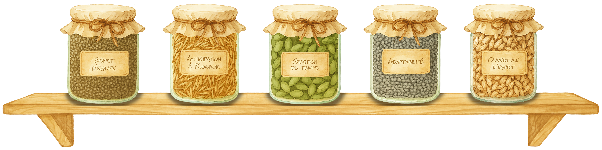

Mon bouquet de savoir-faire

Si j'étais une musique, je serais...
Twin Flame, de MGK.
Si j'étais un film, je serais...
Les Petits Mouchoirs, de Guillaume Canet.
Si j'étais un livre, je serais...
La Rivière à l'Envers, de Jean-Claude Mourlevat.
Si j'étais un personnage fictif, je serais...
Cerise, des Carnets de Cerise.
Si j'étais un pays, je serais...
le pays du soleil levant : le Japon.
